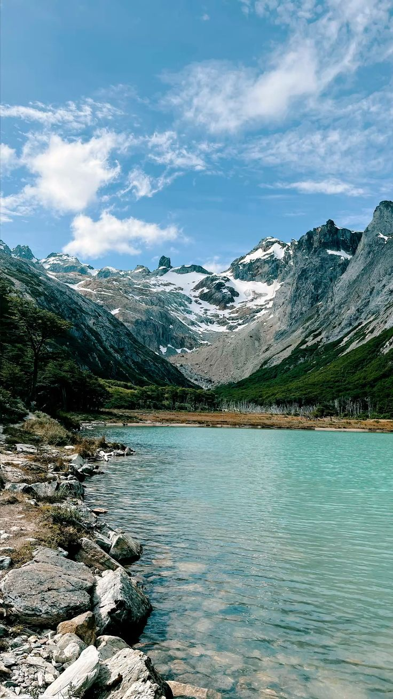
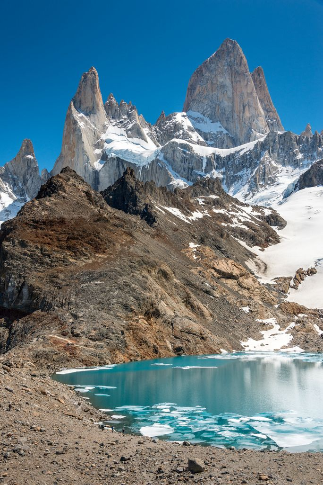

La Patagonia Argentina es una de las regiones más hermosas del país, conocida por sus paisajes naturales únicos. Se destacan sus montañas, glaciares, lagos y extensas llanuras. Lugares como el sur de Argentina atraen turistas de todo el mundo por su belleza y tranquilidad. Es un destino ideal para quienes aman la naturaleza y la aventura.